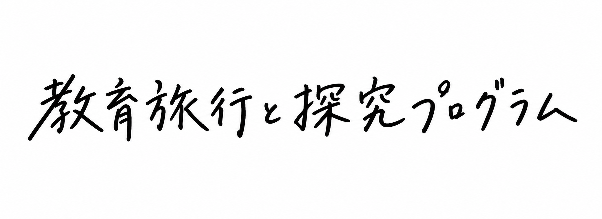

《里山探究プログラム》
地方の課題を探る「課題解決型」と、自由な散策から価値を見つける「まち歩き型」日帰り探究プログラムです。主なテーマは、食と農の本質に迫ること、丹波焼から継承と創造を学ぶこと、里山保全と地域の未来を考えること、城下町の魅力と保全意義を知ること。チームで自分たちなりの解決策を探ります。
所要時間：2時間30分〜終日
対象年齢：中学生以上
受入人数：最大40名（各テーマごと）

地方の課題を探り、地域の可能性を究する。
暮らしの知恵に学び、未来の生き方を考える。
先をゆく、教育旅行へ。
世代を越えて、大人も学生も
価値観を揺さぶる“ふる里山”での体験を。
地方の課題を探る「課題解決型」と、自由な散策から価値を見つける「まち歩き型」日帰り探究プログラムです。主なテーマは、食と農の本質に迫ること、丹波焼から継承と創造を学ぶこと、里山保全と地域の未来を考えること、城下町の魅力と保全意義を知ること。チームで自分たちなりの解決策を探ります。
所要時間：2時間30分〜終日
対象年齢：中学生以上
受入人数：最大40名（各テーマごと）
農業や林業などの生業や自然と共に暮らす知恵を、それぞれの教室の“師匠”から学ぶ、体験特化型の教育プログラムです。農家・木こり・集落の方々との交流を通して、風景や環境を守る大切さ、受け継がれてきた持続可能な暮らしの考え方を知り、これからの生き方や仕事を考えるヒントを探ります。
所要時間：2泊3日〜
対象年齢：高校生以上
受入人数：最大12名（40名も可能、ただし体験の相談要）